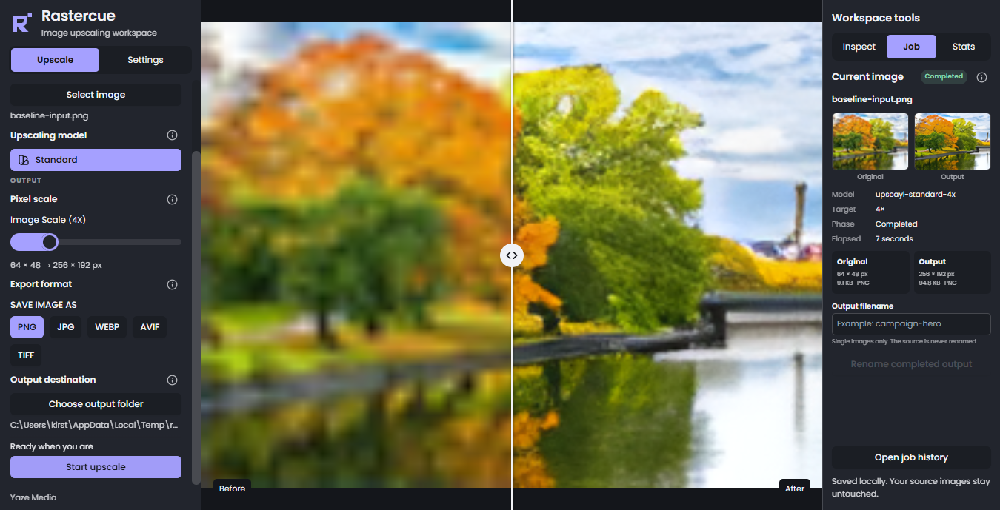
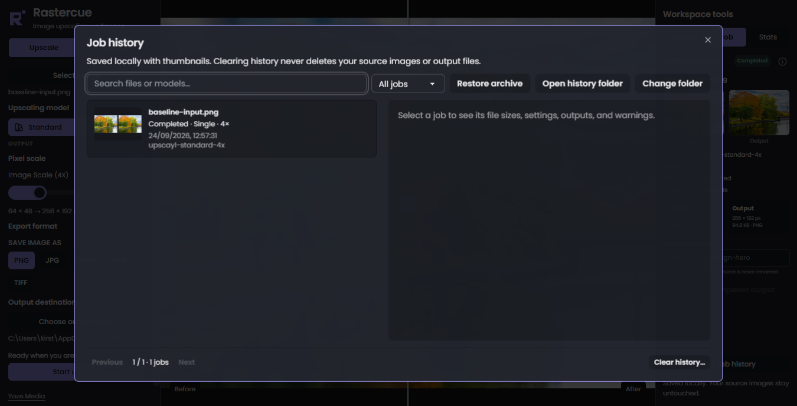
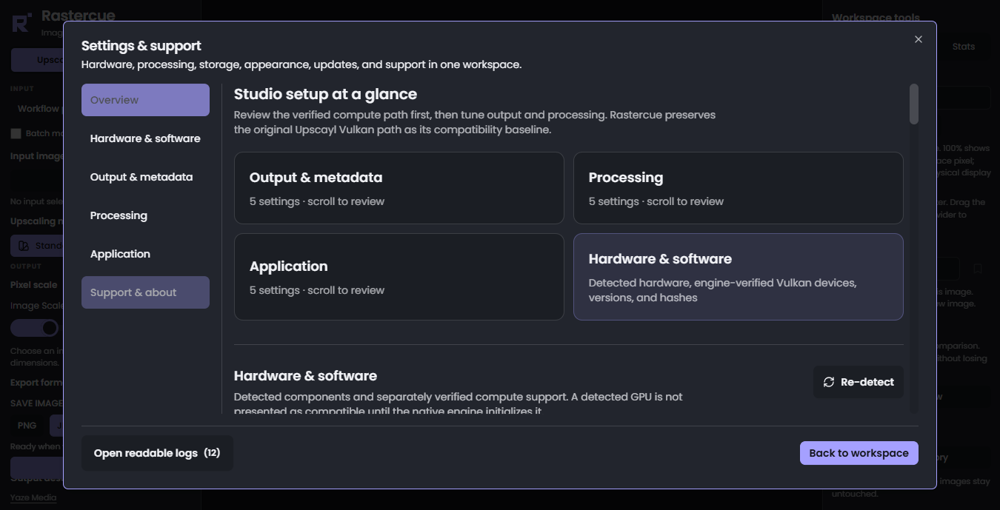
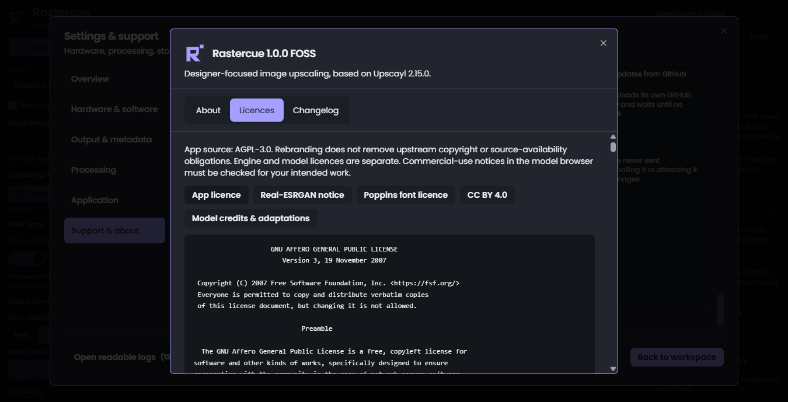

Protected baseline
Original Upscayl Vulkan
Kept available as the protected compatibility path for established Upscayl processing.
Designer workstation / local processing / Windows 10/11 x64
Choose the model and device, inspect the result, and keep the source under your control. Rastercue turns the proven Upscayl core into a focused local studio.
2048 → 8192 PX
DEVICE 0
The workstation
Controls on the left. Inspection on the right. A large, undistorted preview between them.




The non-negotiable
Rastercue is an independently branded derivative of Upscayl. The established native Vulkan path, model contracts and output behaviour form the protected baseline—not disposable scaffolding.
New compute choices sit beside that baseline and earn their place through regression tests, packaged checks and explicit hardware evidence.
Read engine provenanceHardware-aware compute
Rastercue 1.0 distinguishes what Windows detects, what the engine can use and what actually completed the job. Compatibility is measured on the machine—not inferred from a logo.
Protected baseline
Kept available as the protected compatibility path for established Upscayl processing.
Engine-probed
No vendor whitelist. A device appears when the bundled engine can enumerate and probe it.
Native backend included
Genuine NCNN CPU processing passed its no-Vulkan probe and packaged workflow test. Software Vulkan is never relabelled as CPU.
Evidence boundary: a vendor name is never treated as proof. Compatibility and speed claims require a successful packaged engine probe and a completed job on that device.
Model library
Recommended start
Available
Licence noted
Searchable categories, limitations, creator and licence details keep model choice grounded. Optional benchmarks use a bundled non-user image and report measured results for the exact device, driver, engine, model and settings.
Visible processing
Restorable work
History stays lightweight. When a job matters, an on-demand archive can preserve the exact original, exact output, settings, checksums and thumbnails without lossy recompression.
Archive restore validates paths, expanded size and checksums before writing into a user-selected location.
Truth before launch
Protected arguments, source hashes, decoded pixels, dimensions and cancellation.
AMD RX 580 owner-tested. Intel, NVIDIA and other devices remain engine-probe based.
Format validation, safe temporary work and checksum-verified archive restore.
Kirsten accepted the Windows app and product website on 24 September 2026.
Local by design
Processing stays on the machine. Diagnostic capture is local, bounded and reviewable. Images, usernames, absolute paths and private filenames are excluded before a support bundle is shared manually.
Rastercue 1.0.0
Rastercue 1.0 is the stable Windows foundation: owner-tested on the AMD work PC, released with source, documentation and an honest boundary around unsigned binaries and probe-based hardware support.